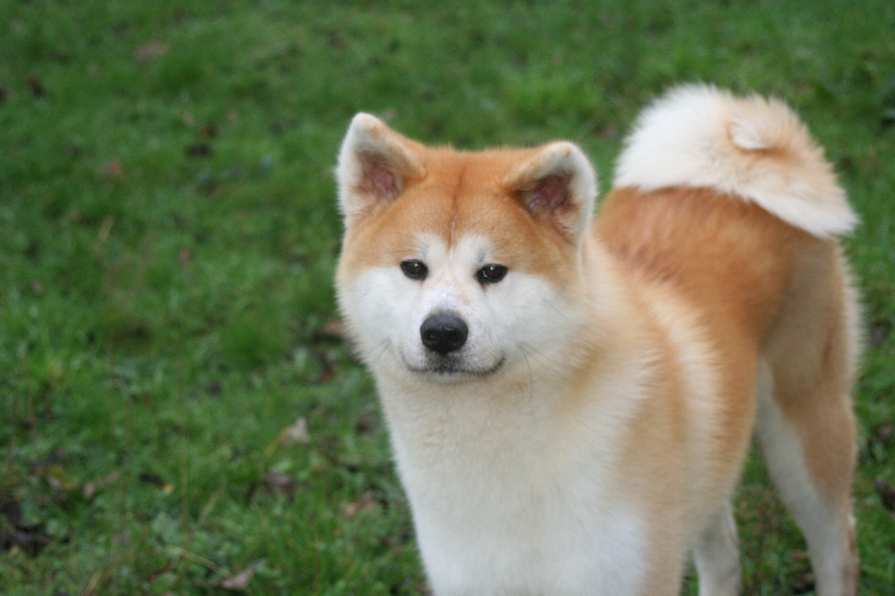
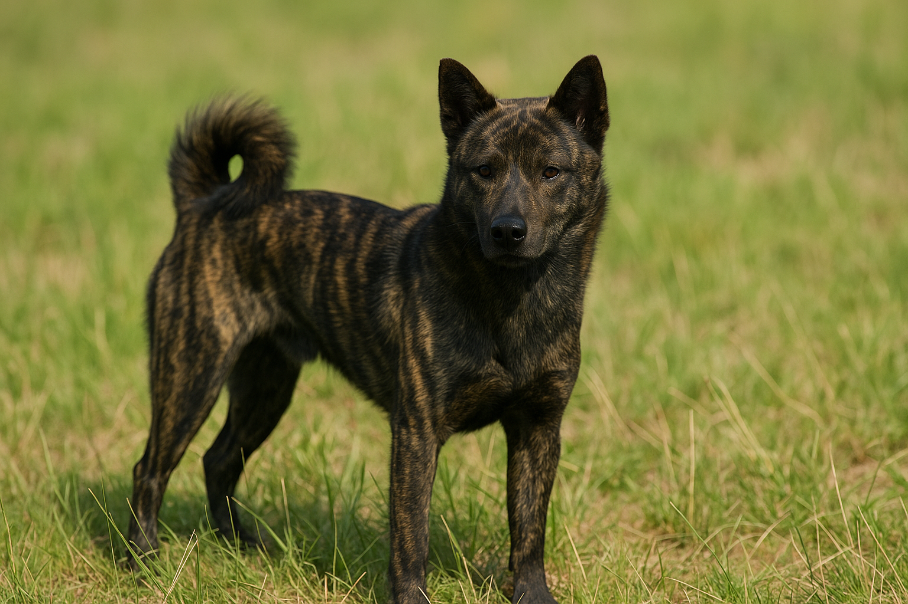
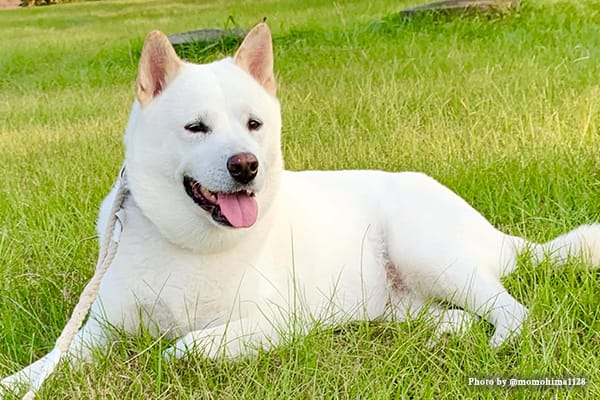
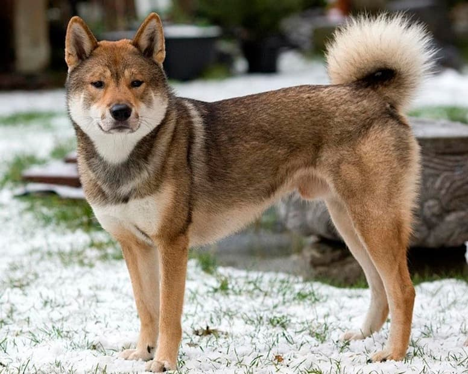
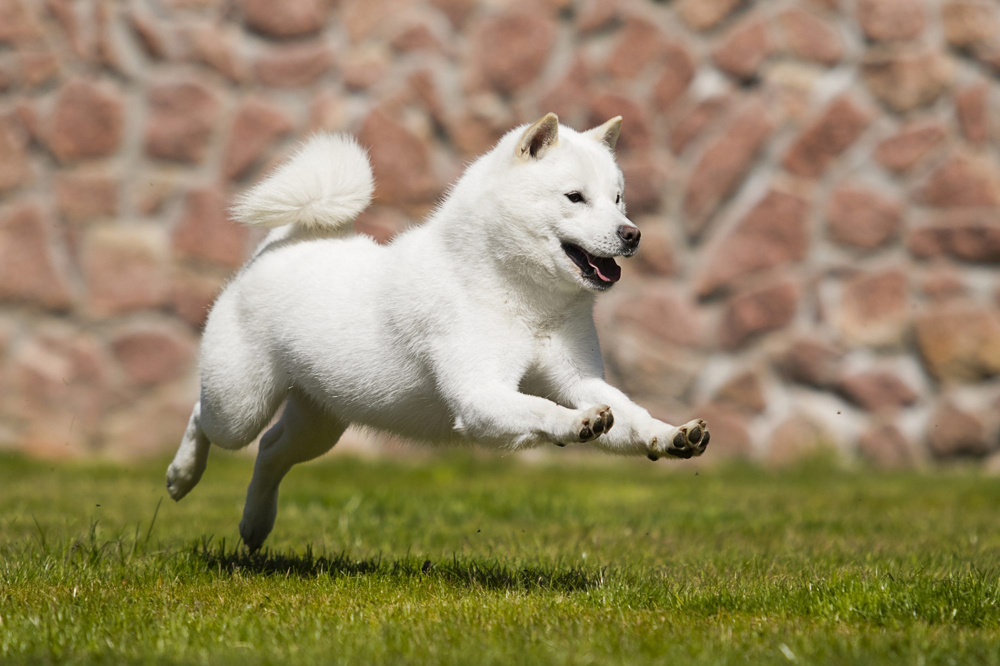

柴犬
くるんと丸まったしっぽがチャームポイント。日本中で愛される人気者です。キリッとしているけれど、時々見せる「拒否柴」な一面もたまらなくキュート！

くるんと丸まったしっぽがチャームポイント。日本中で愛される人気者です。キリッとしているけれど、時々見せる「拒否柴」な一面もたまらなくキュート！

唯一の大型犬で、ぬいぐるみのようなムクムク感が魅力。忠犬ハチ公でもおなじみの、とっても家族想いで優しい「おっきなワンコ」です。

「虎毛」と呼ばれるかっこいい模様が自慢！でも実は、大好きな飼い主さんにだけは甘えん坊になっちゃう「ギャップ萌え」な性格を秘めています。

真っ白で美しい毛並みがとっても綺麗。山を駆け回るたくましさがありつつ、おうちでは落ち着いて寄り添ってくれる、頼れるパートナーです。

まるで小さなオオカミのような、シュッとしたお顔立ち。凛々しくて一途な性格は、まるで武士のよう。自然体なかっこよさがあふれています。

雪の中でも元気いっぱい！真っ直ぐな瞳と、ふっくらしたお耳が愛らしいです。とっても家族を大切にする、情に厚い頑張り屋さんです。